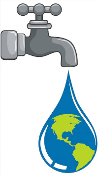
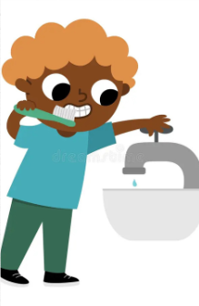

¿Alguna vez pensaste qué pasaría si un día abrieras la canilla y no sale agua?
El agua es muy importante para nuestra vida, ya que la usamos todos los días para tomar, cocinar, bañarnos y muchas otras cosas. En este artículo vamos a hablar sobre por qué tenemos que cuidarla y qué pasaría si algún día faltara.
A veces usamos el agua sin pensar que es un recurso que no se termina nunca. Por eso, es importante conocer para qué la necesitamos y aprender algunas formas sencillas de cuidarla.

La importancia del agua
El agua es necesaria para todos los seres vivos. Las personas la necesitamos para hidratarnos, cocinar, bañarnos y mantener nuestra higiene. También es importante para los animales y las plantas, ya que sin agua no podrían vivir.

¿Qué pasaría si faltara?
Si algún día nos quedáramos sin agua, nuestra vida cambiaría mucho. No podríamos tomar agua, preparar alimentos ni realizar las actividades que hacemos todos los días. Además, las plantas se secarían y muchos animales tendrían dificultades para sobrevivir.
Cómo cuidarla
Es importante no desperdiciarla. Podemos cuidarla cerrando la canilla mientras nos lavamos los dientes, tomando duchas más cortas y evitando dejar correr el agua sin necesidad. Aunque parezcan acciones pequeñas, entre todos podemos hacer una gran diferencia.
El problema de la contaminación
Cuando se tiran residuos, basura o sustancias contaminantes en los ríos, lagos y mares, el agua puede dejar de ser segura para las personas, los animales y las plantas. Por eso, también es importante no tirar basura en lugares donde pueda llegar al agua y cuidar los espacios naturales.
El agua es un recurso muy importante para la vida y debemos cuidarla todos los días. Cada pequeña acción cuenta y, si todos ponemos de nuestra parte, podemos evitar desperdiciarla. ¡Cuidar el agua es cuidar nuestro futuro!